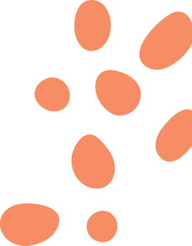

Ahora te presentamos a
GuioIA
La herramienta que desarrollamos en Centro Ático, que conecta las bases de datos de los participantes en el Laboratorio de Guion con OpenAI, para identificar patrones que permitan evidenciar el talento de la nueva generación de guionistas, así como sus intereses para direccionar los retos que se avecinan en la industra audiovisual con los nuevos talentos.
Solo basta con hacerle una pregunta y descubriras lo que están escribiendo los guionistas colombianos.
GuionIA es la evidencia de que los datos y la sensibilidad pueden caminar juntos para reconocer y potenciar a la nueva generación de guionistas del país.
La herramienta que desarrollamos en Centro Ático, que conecta las bases de datos de los participantes en el Laboratorio de Guion con OpenAI, para identificar patrones que permitan evidenciar el talento de la nueva generación de guionistas, así como sus intereses para direccionar los retos que se avecinan en la industra audiovisual con los nuevos talentos. Solo basta con hacerle una pregunta y descubriras lo que están escribiendo los guionistas colombianos.